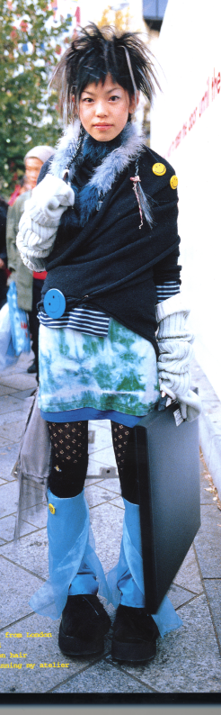
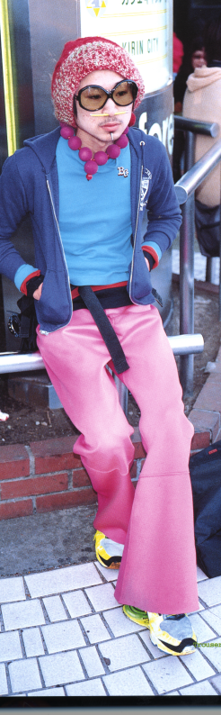
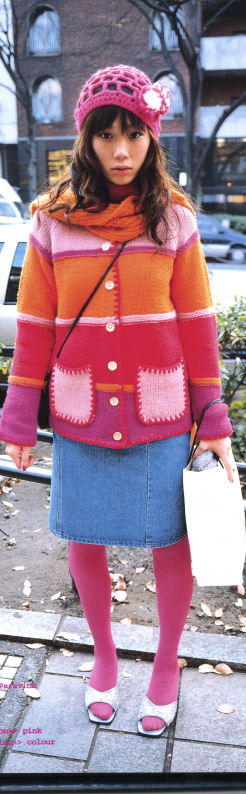
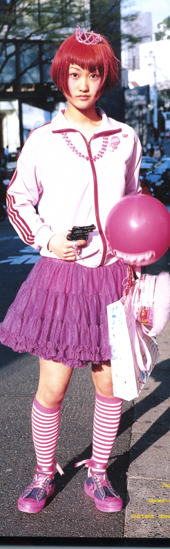

|  |  |  |  |
These are real people in the streets of the neighborhood of Harajuku, Tokio!
Many say their parents don't approve so they meet and make a performance out of transforming into their characters with make up and costume. These Japanese, who are traditionally shy, completely become someone else being in public (which is raised to a performance art). In Western countries, the closest thing that we can enjoy to this display are Drag Queens.
But I digress. These people are manga -fied. The idea here is to try to draw them in an sketchy but realistic way (simply pencil on white continuous paper). They will be drawn in real-life size. Although they are real people drawn in real-life size the spectator will still probably assume that they are just some large sketckes for some manga characters.That is, we are playing with the fact that drawing (sketching) is easily associated with invention, a way of materialze things that are only in the mind. This people may look invented even when drawn very realistically.
NOTE: This pictures are not mine, but photographer Shoichi Aoki's. Technically, I shouldn't even have them online. They will be replaced with the drawings as soon as I complete them, or the publisher's lawyer calls :). These are not the final figures, I may change them.